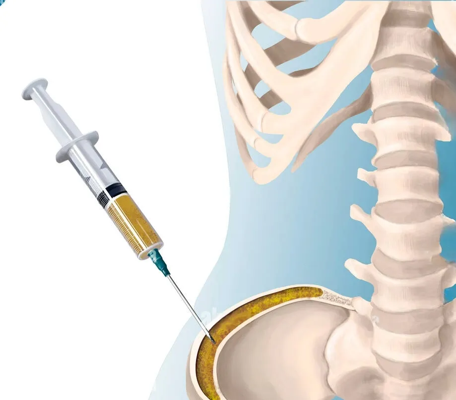
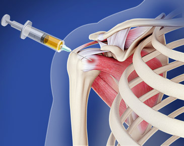

Satisfied Patients
Dr. Prasanna Kumar G S is a highly
accomplished Senior Orthopaedic, Joint Replacement, and
Arthroscopy Surgeon with more than 12 years of experience. He
completed his MBBS from Rajiv Gandhi University of Health
Sciences, Bangalore, MS in Orthopaedics from Grant Medical
College and Sir J. J. Hospital, Mumbai, and DNB in
Orthopaedics from the National Board of Examinations, Delhi.
He is currently associated with
Fortis Hospital Yeshwanthpur.
Dr. Prasanna Kumar G S is a
leading Robotic Orthopedic Surgeon in Nandini Layout,
Bangalore, offering robotic-assisted knee and hip replacement,
arthroscopy, sports injury treatment, and fracture care from
Fortis Hospital Yeshwanthpur — just a short
drive from Jalahalli. With 13+ years of experience and 5,000+
successful surgeries, he delivers greater surgical precision,
faster recovery, and reduced post-operative pain compared to
conventional techniques.
Trusted care backed by years of surgical experience.
Round-the-clock support for orthopedic care.
Call Us 24/7
Successful Surgeries
Happy Patients
Years Experience
Awards
High-quality knee replacements for improved mobility and reduced pain.
Read MoreShoulder replacement surgery for pain relief and improved mobility.
Read MoreElbow surgeries designed to relieve pain and restore full range of motion.
Read MoreAdvanced ankle surgeries for mobility restoration and long-term comfort.
Read More.png)
Hand surgery solutions to restore function and relieve pain effectively.
Read MoreRobotic joint replacement surgery for accurate implant positioning and smoother recovery.
Read MoreAs a leading Joint Replacement Surgeon in Nandini Layout, Dr. Prasanna offers comprehensive care for the two most commonly replaced joints in the body — the knee and the hip.
Patients suffering from knee arthritis, severe knee pain, stiffness, or deformity find long-lasting relief through total or partial knee replacement. Dr. Prasanna's robotic technique ensures the knee implant fits and functions as naturally as possible, enabling patients to walk, climb stairs, and resume light physical activity far sooner than with traditional surgery.
Hip arthritis and hip pain can be debilitating, limiting every aspect of daily life. Dr. Prasanna's robotic hip replacement surgery restores smooth, pain-free joint movement. Patients benefit from optimal implant positioning that reduces the risk of dislocation and improves long-term function, making it one of the most sought-after procedures for residents across Nandini Layout, Rajajinagar, and Basaveshwaranagar.
Beyond joint replacement, Dr. Prasanna is a highly skilled Orthopedic Surgeon in Nandini Layout who diagnoses and treats a wide range of musculoskeletal conditions. His holistic approach to orthopedic care ensures that surgery is only recommended when truly necessary, with a strong emphasis on conservative management and guided rehabilitation.
Patients from Nandini Layout, Mahalakshmi Layout, Yeshwanthpur, Peenya, and surrounding areas travel to Dr. Prasanna's clinic for orthopedic consultations covering everything from fracture care to sports medicine.

Expert surgical care for trauma, joints, and complex orthopedic conditions.
Read More
.png)
BMNC injections reduce inflammation and support healing using regenerative body cells.
Read More
.png)
Stem cell therapy regenerates cartilage, reduces pain, and restores joint mobility.
Read MoreLed by a highly experienced surgeon with proven clinical excellence.
Minimally invasive, arthroscopic, and robotic-assisted procedures for faster recovery.
We listen, personalize care, and ensure you're informed every step.
.jpg)
Our outcomes speak for themselves—thousands of successful orthopedic surgeries performed.
From physiotherapy to follow-ups, we support your recovery journey completely.
Transparent, cost-effective care with no compromise on quality or service.
If you are searching for a trusted andexperienced Robotic Orthopedic Surgeon in Nandini Layout, Dr. Prasanna brings world-class expertise in robotic joint replacement surgery and comprehensive orthopedic care to patients across Nandini Layout and the surrounding localities of Yeshwanthpur, Mahalakshmi Layout, Basaveshwaranagar, Peenya, and Rajajinagar. Dr. Prasanna specialises in robotic-assisted knee replacement surgery, robotic hip replacement surgery, arthroscopy, sports injury treatment, and the full spectrum of bone and joint disorders. His clinic serves as a one-stop destination for patients seeking advanced, minimally invasive orthopedic treatment without travelling far from home. Whether you are experiencing chronic knee pain, hip arthritis, a sports-related ligament tear, or require revision joint replacement surgery, Dr. Prasanna combines precision robotic technology with personalised care to restore your mobility and improve your quality of life.
Discuss your symptoms and medical history with the surgeon.
Comprehensive examination, X-rays, and tests to identify the issue.
Receive a tailored surgical or non-surgical care approach.
Rehabilitation and follow-up to restore strength and mobility.
I had severe knee pain for over a year. After undergoing joint replacement surgery here, I’m finally able to walk pain-free. The doctor explained everything clearly, and the care was top-notch!
I was struggling with hip arthritis for years. The surgery and post-op care I received were exceptional. The doctor and team were very professional and caring. I’m back to walking and living life normally again!
I injured my shoulder while playing cricket. The orthopedic team helped me recover fully with physiotherapy and expert guidance. Excellent experience – thank you for helping me get back to the field!
My father had both knees replaced here. The surgery was smooth, and recovery support was excellent. We are grateful to the orthopedic team for giving him a new lease on life. Highly trustworthy and skilled.
Choosing the right orthopedic surgeon is one of the most important decisions a patient can make. Dr. Prasanna stands apart as a premier Robotic Orthopedic Surgeon in Nandini Layout for several compelling reasons.
Robotic Joint Replacement Surgery represents the gold standard in modern orthopedics. Unlike traditional manual techniques, robotic-assisted surgery uses real-time, three-dimensional imaging and computer-guided robotic arms to achieve a level of precision that the human hand alone cannot replicate.
The robotic system creates a personalised surgical plan before the operation begins, mapping each patient's unique bone structure so that implants are positioned with sub-millimetre accuracy. This results in better implant alignment, reduced wear, longer implant life, and a significantly faster return to daily activities.
Get Expert Robotic Orthopedic Care Near Nandini Layout
Don't let joint pain limit your mobility. Schedule a consultation with Dr. Prasanna, Robotic Orthopedic Surgeon serving Nandini Layout and nearby areas.
Find quick answers about robotic orthopedic consultation, joint replacement, arthroscopy, sports injuries, and appointment booking with Dr. Prasanna Kumar G S.
Dr. Prasanna is widely regarded as one of the best Robotic Orthopedic Surgeons in Nandini Layout. He specialises in robotic knee and hip replacement surgery, arthroscopy, and sports injury treatment, serving patients from Nandini Layout, Yeshwanthpur, Basaveshwaranagar, Mahalakshmi Layout, Peenya, and Rajajinagar with precision-driven, patient-centred orthopedic care.
You can consult Dr. Prasanna, a leading Joint Replacement Surgeon in Nandini Layout, at his clinic conveniently located for residents across Nandini Layout and nearby areas including Yeshwanthpur, Rajajinagar, and Mahalakshmi Layout. He offers advanced robotic knee and hip replacement, revision surgery, and minimally invasive joint replacement procedures. Visit www.drprasannaortho.com to book an appointment.
Robotic knee replacement surgery offers sub-millimetre precision, personalised 3D bone mapping, smaller incisions, reduced blood loss, lower complication rates, and faster recovery compared to traditional techniques. Patients typically experience less post-operative pain, a shorter hospital stay, and longer-lasting implants due to accurate alignment — making it the preferred option for eligible patients.
Most patients begin walking within 24 hours of robotic joint replacement surgery. Full recovery typically takes 6 to 12 weeks, depending on the type of surgery, the patient's overall health, and adherence to physiotherapy. Robotic techniques often reduce recovery time compared to conventional surgery due to less tissue damage and improved implant alignment.
If you are searching for the best orthopedic surgeon near Nandini Layout, Dr. Prasanna is a highly recommended choice. He is a specialist Robotic Orthopedic Surgeon offering knee and hip replacement, arthroscopy, sports injury treatment, and joint pain management, serving patients across Nandini Layout, Basaveshwaranagar, Yeshwanthpur, Peenya, and the broader North and West Bangalore region.
Dr. Prasanna is the primary specialist who performs Robotic Knee Replacement Surgery in and around Nandini Layout, Bangalore. Using advanced robotic surgical systems, he creates a customised surgical plan for each patient, ensuring precise implant positioning, faster rehabilitation, and excellent long-term outcomes for knee arthritis and related conditions.
Advanced orthopedic treatment near Nandini Layout is available at Dr. Prasanna's clinic. He provides robotic joint replacement surgery, arthroscopy, sports injury treatment, revision joint replacement, and comprehensive orthopedic consultations. His practice is accessible to patients in Nandini Layout, Mahalakshmi Layout, Rajajinagar, Yeshwanthpur, Peenya, and Basaveshwaranagar.
Dr. Prasanna performs Robotic Joint Replacement Surgery at a state-of-the-art facility near Nandini Layout, Bangalore, equipped with the latest robotic surgical platforms. For details on the associated hospital, surgical scheduling, and pre-operative consultations, visit www.drprasannaortho.com or contact Dr. Prasanna's clinic directly.
Explore location-based orthopedic search terms for patients looking for joint replacement, sports injury, fracture, and arthroscopy care across Bangalore.